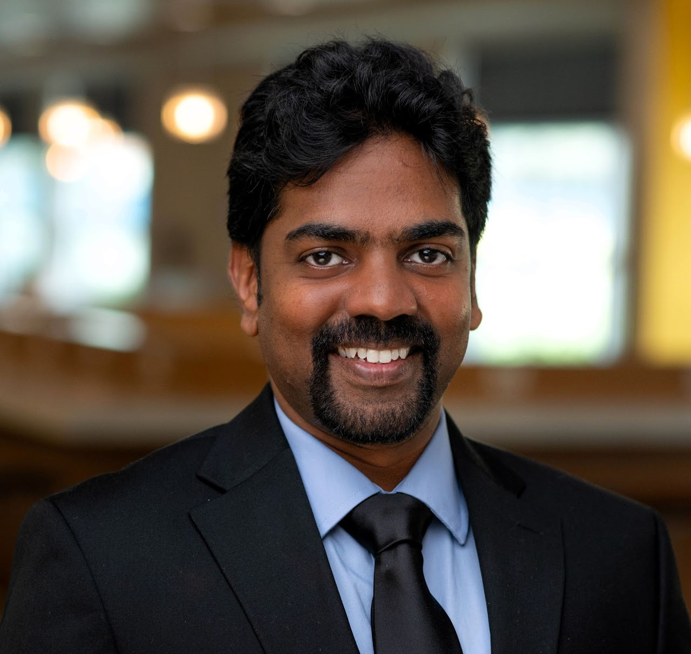

Principal Investigator

Dr. Sumith Yesudasan
Assistant Professor
300 Boston Post Rd. West Haven, CT 06516
T: (203) 479-4797
E: sumith@newhaven.edu
W: sumith.uk
Partially Funded Master's Program with Fellowship
There are numerous avenues to engage in our research initiatives while receiving financial support. Several scholarships not only cover tuition fees but also offer stipends. One of the most prevalent opportunities available is the Graduate Research Assistant position. For a comprehensive overview, please visit the University of New Haven's Graduate Assistantships and Scholarships page .
Graduate Student Researchers
Joseph Marcelo
MS in Mechanical Engineering
Nanoscale evaporation techniques using molecular dynamics simulations.
Graduate ResearcherUndergraduate Student Researchers
Ryan Barry
BS in Mechanical Engineering
Ryan will be working on the thermal analysis of the pyrolysis machine.
Undergraduate ResearcherAlumni
Mark Taylor
BS in Mechanical Engineering
AlumniChristopher Brown
MS in Mechanical Engineering
He worked on a Nuclear Regulatory Commission (NRC) funded project related to analysis of shock and impact resilience of Multi-Mission Radioisotope Thermoelectric Generators during Martian landings to ensure structural integrity and reliable power generation.
AlumniAlexis Fernandez
BS in Mechanical Engineering
Alexis worked on the thermal design of a pyrolysis machine.
AlumniPradyumna Iyer
MS in Biomedical Engineering
He worked on docking studies of advanced glycation end products with various blood factors.
AlumniMamshad Musharaf Mohammed
MS in Mechanical Engineering
Mamshad worked on molecular dynamics studies of evaporation in nanopores. Mamshad is a recipient of University of New Haven Provost Scholarship.
AlumniEvan Lima
MS in Mechanical Engineering
Evan worked on a Nuclear Regulatory Commission (NRC) funded project related to cooling system design for Multi-Mission Radioisotope Thermoelectric Generators.
AlumniJai Tej Diddi
MS in Mechanical Engineering
Jai investigated the binding characteristics of heparin with antithrombin through molecular dynamics simulations. He previously worked on an external industry-funded project related to thermo-electric management of medical devices and successfully completed it.
AlumniYashwanth Kanthala
MS in Mechanical Engineering
Yashwanth investigated the binding characteristics of heparin with fibrinogen through molecular dynamics simulations.
AlumniPavan Kumar Kandhala
MS in Mechanical Engineering
TBD
AlumniTimothy Silva
BS in Mechanical Engineering
Tim worked on a NASA-funded project related to radiation measurement experimentation.
AlumniElla Nenoff
BS in Mechanical Engineering
Ella worked on a NASA-funded project related to radiation simulation.
AlumniAlish Regmi
MS in Mechanical Engineering
Alish worked on phase-change-based cooling techniques for space electronics.
AlumniJeffrey Benavides
BS in Mechanical Engineering
Jeffrey worked on modeling of solar radiation measurement using earth-based devices.
AlumniAllen Jeffery
BS in Mechanical Engineering Technology, Class of 2024, Sam Houston State University
Allen worked on combined radiative cooling simulation of spacecraft electronics.
AlumniNabethse Gomez
BS in Electronics and Computer Engineering Technology, Sam Houston State University
Nabethse worked on data acquisition of liquid cooling experimentation.
AlumniRodolfo Esquivel
BS in Mechanical Engineering Technology, Class of 2024, Sam Houston State University
Rodolfo worked on thermal management of computer chips using jet impingement cooling.
AlumniMatthew Lamacchia
BS in Mechanical Engineering Technology, Class of 2023, Sam Houston State University
Matthew Lamacchia worked on efficient cooling and power harvesting using solar panels for high-rise buildings.
Alumni